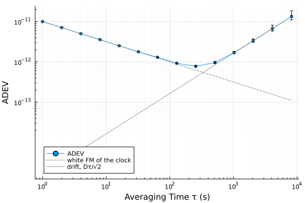
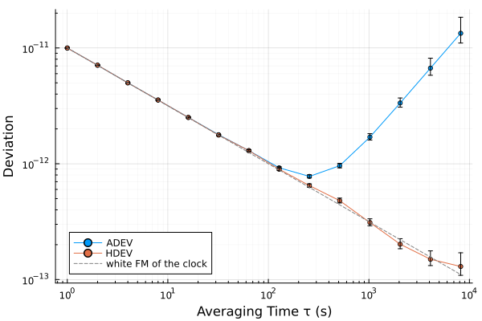
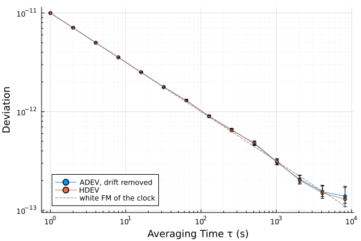
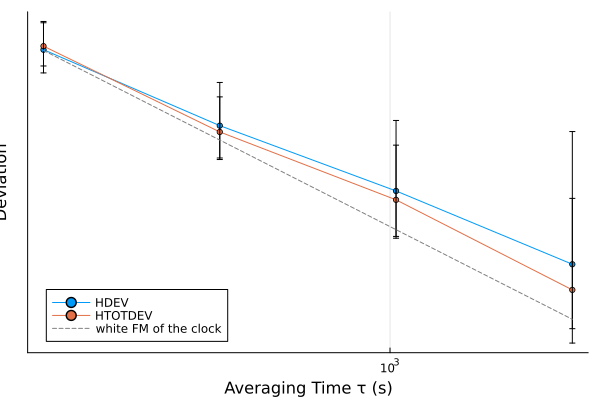

A drifting clock and the Hadamard family
Most frequency sources drift (SP1065 §5.19), and on a stability plot a linear frequency drift covers the noise of the clock at long averaging times. This tutorial simulates a drifting clock and reaches its noise in two ways: with the Hadamard deviation, which does not respond to the drift, and by removing the drift before the Allan deviation. It then turns to the time error of the clock and to a record that is short for the averaging times of interest.
using SigmaTau
using RandomOne day of a drifting clock
The clock has white FM noise of $σ_y = 10^{-11}$ at 1 s and a frequency drift of $2 × 10^{-10}$ per day, and it is sampled every second for a day. noise_gen simulates the noise. A drift is not noise, so it is added to the fractional frequency directly, as $Dt$.
τ₀ = 1.0 # sample interval, in seconds
N = 86_400 # one day
σ₁ = 1.0e-11 # white FM: σ_y at 1 s
D = 2.0e-10 / 86_400 # drift, per second
wfm = noise_gen(FrequencyData, N, τ₀; sigma1 = Dict(0 => σ₁), rng = Xoshiro(1))
clock = FrequencyData(wfm.y .+ D .* τ₀ .* (0:N-1), τ₀)FrequencyData{Float64}(86400 samples, τ₀=1 s)Every estimator below is computed at the same averaging factors, octaves from 1 s to 8192 s, so that the curves compare point for point.
m = 2 .^ (0:13)
τ = m .* τ₀The drift in the Allan deviation
The phase of a clock with a linear frequency drift $D$ grows as $Dt^2/2$. Its second difference over $τ$, on which the Allan variance rests, is $Dτ^2$, so the drift adds
\[σ_{y,\mathrm{drift}}^2(τ) = \frac{D^2τ^2}{2}\]
to the variance of the noise. The deviation of the drift alone rises as $τ$ while that of white FM falls as $τ^{-1/2}$, and the two are equal at an averaging time of
σ_noise = σ₁ ./ sqrt.(τ)
σ_drift = D .* τ ./ sqrt(2)
τ_cross = (sqrt(2) * σ₁ / D)^(2/3) # in seconds334.19439602011994Beyond it the Allan deviation of this clock shows the drift and not the noise:
using Plots
r_adev = adev(clock, m)
plot(r_adev; label = "ADEV", legend = :bottomleft)
plot!(τ, σ_noise; ls = :dash, color = :gray, label = "white FM of the clock")
plot!(τ, σ_drift; ls = :dot, color = :gray, label = "drift, Dτ/√2")
The noise identification is misled with it. It takes the rising curve for random-walk FM, and the intervals at those averaging times describe a noise that is not there:
r_adev.noise_type[end-1:end]2-element Vector{Symbol}:
:RWFM
:RWFMThe Hadamard deviation
hdev takes the third difference of the phase where the Allan deviation takes the second. The third difference of $Dt^2/2$ is zero, so a linear frequency drift contributes nothing to it (SP1065 §5.2.8), and the record needs no preparation:
r_hdev = hdev(clock, m)
plot([r_adev, r_hdev]; label = ["ADEV" "HDEV"], legend = :bottomleft)
plot!(τ, σ_noise; ls = :dash, color = :gray, label = "white FM of the clock")
The Hadamard deviation follows the noise of the clock over the whole range. At short averaging times the two curves coincide: both variances are normalized to the standard variance for white FM (SP1065 §5.2).
Removing the drift
The other way is the one SP1065 advises as the usual course: estimate the drift, remove it, and let the stability plot show the noise alone (§5.19 and §11.2). drift_fit fits a line to the fractional frequency, the optimum estimate of a drift under white FM (SP1065 §5.22), and reports the rate per day with its standard error:
drift = drift_fit(clock)
drift.rate, drift.rate_stderr # per day; the drift put in was 2e-10(1.9995647420582044e-10, 1.1809834258239938e-13)detrend removes the fitted line, and the Allan deviation of what remains agrees with the Hadamard deviation of the record as it was measured:
r_flat = adev(detrend(clock), m)
plot([r_flat, r_hdev]; label = ["ADEV, drift removed" "HDEV"], legend = :bottomleft)
plot!(τ, σ_noise; ls = :dash, color = :gray, label = "white FM of the clock")
The two differ in confidence. At the same averaging time the Hadamard deviation has fewer equivalent degrees of freedom than the Allan deviation (SP1065 §5.2). The columns are $τ$ in seconds and the EDF of the two, for the last three points:
[τ r_flat.edf r_hdev.edf][end-2:end, :]3×3 Matrix{Float64}:
2048.0 61.0414 51.2249
4096.0 29.4112 24.1207
8192.0 13.6171 10.6068Removing the drift therefore gives the narrower interval where a model of the drift fits. The Hadamard deviation needs no model, which SP1065 notes as the more convenient when sources with different drifts are analyzed together (§11.2). Gaps, outliers and drift has more on fitting a drift and judging the fit.
Phase noise and time error
Two more members of the family keep the drift rejection of the third difference. mhdev averages the phase over $τ$ before differencing, as mdev does, and so separates white PM from flicker PM: use it when the short averaging times of a drifting clock are limited by phase noise. htdev is its time form, in seconds, as tdev is that of mdev.
The time deviation of this clock shows what the drift does to a time error. The columns are $τ$, TDEV and HTDEV, in seconds:
r_tdev = tdev(clock, m)
r_htdev = htdev(clock, m)
[τ r_tdev.dev r_htdev.dev][[1, 5, 9, 13], :]4×3 Matrix{Float64}:
1.0 5.77347e-12 5.46992e-12
16.0 1.64833e-11 1.47574e-11
256.0 9.38687e-11 6.26258e-11
4096.0 1.58384e-8 2.36392e-10At 1 s and 16 s the two are within about a tenth of each other. Beyond the crossover TDEV shows the drift, and HTDEV remains the time error of the noise.
A short record
Suppose the record ends after three hours. At the longest averaging times the estimate then rests on few independent differences, and its interval is wide. A total estimator extends the data by reflection and gains degrees of freedom there. htotdev is the total form of the Hadamard deviation and rejects the drift as it does (SP1065 §5.2.14).
short = FrequencyData(clock.y[1:10_800], τ₀)
m_long = [256, 512, 1024, 2048]
r_h = hdev(short, m_long)
r_ht = htotdev(short, m_long)
[r_h.tau r_h.edf r_ht.edf]4×3 Matrix{Float64}:
256.0 51.2293 72.3878
512.0 24.1229 34.7739
1024.0 10.6079 16.1219
2048.0 4.06839 7.03699The columns are $τ$ and the EDF of HDEV and of HTOTDEV. The gain grows toward the end of the curve, where it is needed, and the intervals narrow with it:
plot([r_h, r_ht]; label = ["HDEV" "HTOTDEV"], legend = :bottomleft)
plot!(r_h.tau, σ₁ ./ sqrt.(r_h.tau); ls = :dash, color = :gray,
label = "white FM of the clock")
A total estimator is biased by an amount that depends on the noise type, which the package identifies and corrects for (Bias correction). mhtotdev is the total form of mhdev, for a short record of a drifting clock with phase noise (MHTOTDEV bias and EDF).
Which to use
| The record | Use |
|---|---|
| drifts | hdev |
| drifts, and the kind of phase noise matters | mhdev |
| drifts, and the answer is a time error | htdev |
| drifts, and is short for the averaging time of interest | htotdev, or mhtotdev with phase noise |
| does not drift, or has had its drift removed | the Allan family, which has more degrees of freedom at the same $τ$ |
Choosing an estimator covers the other questions a record can be asked.